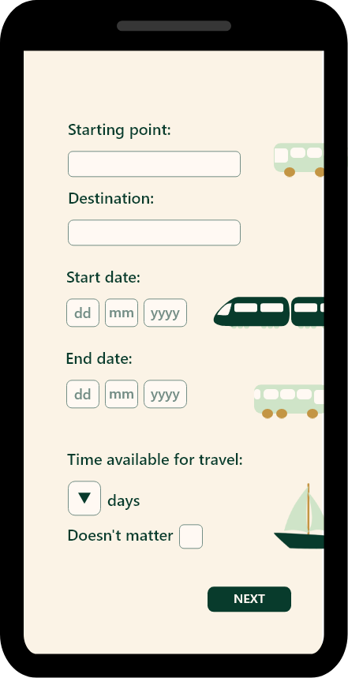

Explore Greentrotter
Greentrotter believe that sustainable tourism should include a meaningful experience and tourist satisfaction 5. Additionally, we recognize that there is hardly any way for people to plan and book a sustainable, roundtrip journey easily6. That is why we have created the Greentrotter travel app.
By taking advantage of algorithms designed to estimate Co2 emissions 7, the Greentrotter app is able to combine all the available forms of passenger transportation and calculate the most sustainable transportation method from and to any given destination within the appropriate time frame.
Once you’ve found your preferred route you’ll be able to book all the tickets you need through our app.
Even though we recommend alternative ways of travelling, you will still be able to view and purchase flight options from the most sustainable airlines.
What are you waiting for? Book your next sustainable adventure with Greentrotter!